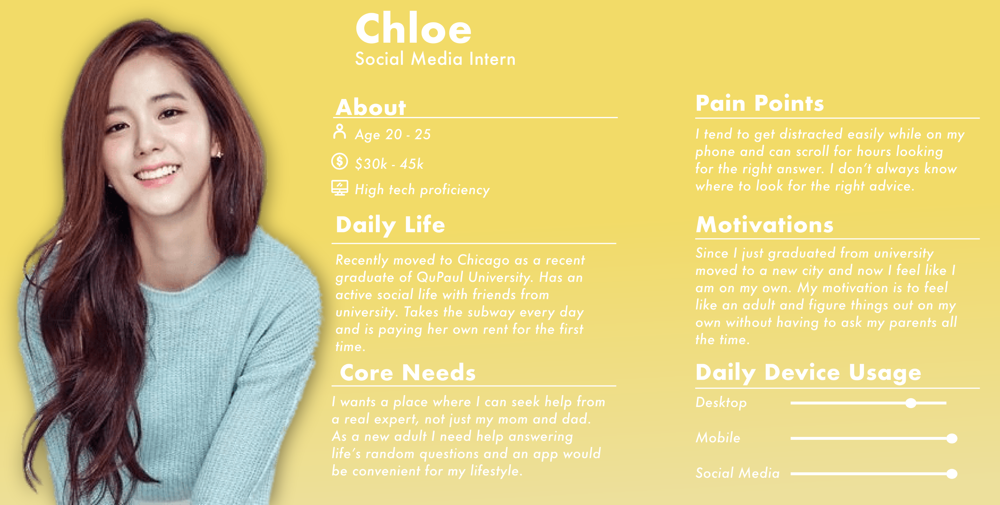
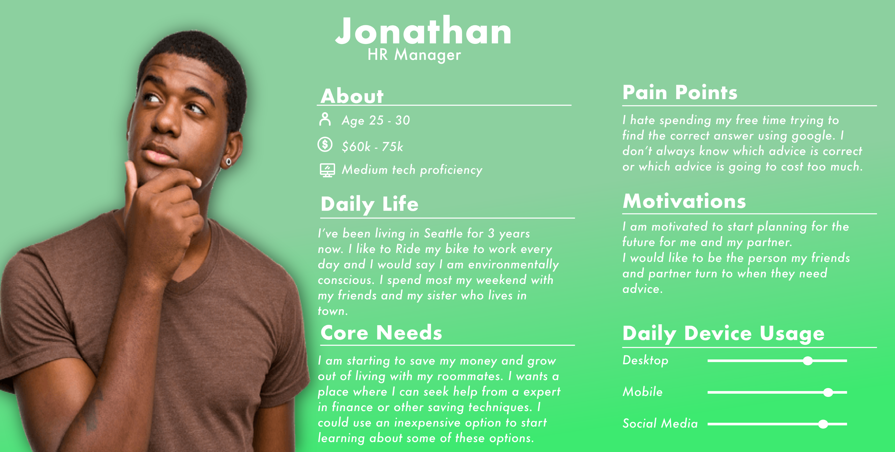
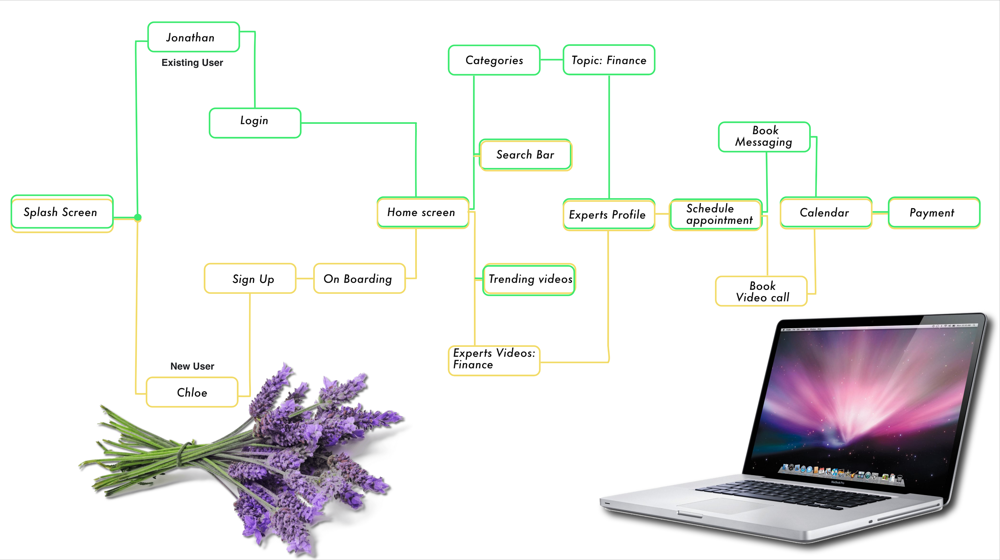
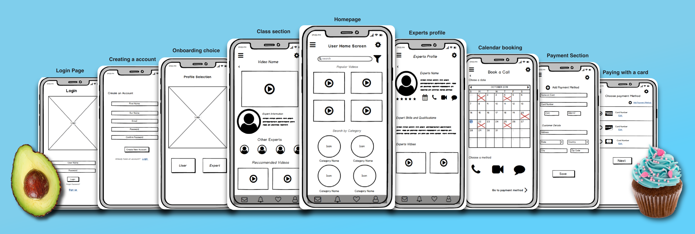
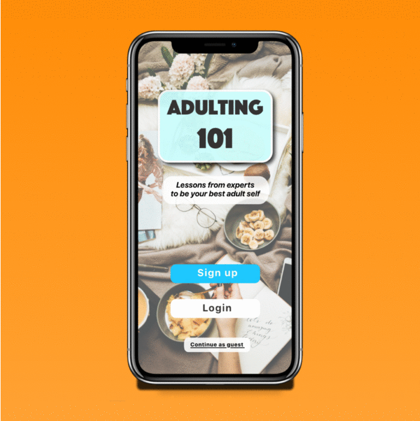

Adulting 101 Case Study
UX/UI Design Case Study
"A mobile app made to help young adults get lessons
from experts
so that they can go on and be their best adult selves!"

The Brief
The Problem:
Young adults need a platform that they can turn to when they need answers for a serious, 'adult' question they may have.
This platform needs to provide expert advice from none other than experts in their fields to guide the users to helpful
and trustworthy answers.
We will know this problem to be true when we see that users seek expert advice for the questions they have, instead of
using other platforms to find this advice.
Proposed Solution:
This app main goal is to provide the answers whenever a user poses a question. The user should feel comfortable asking
any question just like they would to a friend or family member and in return get a response straight from an expert that
they can trust.
The Process
Now that I had a possible solution to my problem and had an idea of the targeted demographic to aim for I started with
the Information architecture phase. This phase is where I created user stories and flows based on the requirements of
the app and use rapid prototyping to quickly create and discard ideas for the wireframe design.
In the end, I had sketched a low fidelity wireframe, which I turn into an interactive prototype and put to the test with
the targeted user base. A round of iterations got me ready to better understand my users need.
It was time to better define the UI elements of this app. Using my low fidelity prototype as a base, I created
mid-fidelity wireframes, adding content blocks and UI patterns for better definition. After some more usability testing,
I defined the hierarchy and style that I moved into my high fidelity wireframes. Using the IOS style guide I added icon
sets and typography, imagery and colours finishing my UI design and documenting my design in a style guide.
Users personas & Interveiws
Creating a personality for our target market helps me to create an experience unique to my users.
User personas were created after conducting two in-person qualitative Interviews. These interviewees were chosen
according to Adulting 101's target demographic.
*Names were changed for privacy purposes.
Persona #1
Persona #2
Users Flow Map
Based on our user personas, mapping out the basic user flow for the app helped create a flow that could solve the user's problem efficiently and avoid common pain points.
Mid-Fidelity Wireframes
Now that I have a user-defined low fi wireframe, I could confidently create a Mid fidelity prototype. A 12-column grid system was chosen for spacing, and UI patterns were researched to comply with the IOS style guidelines. The Mid fidelity prototype served as my base prototype during the usability tests.
Usability Testing & Results
Usability Testing Guidelines:
Using the Mid- fidelity prototype, a series of online moderated usability tests were held all with the target
demographic for the app in mind.
My Research goals for this app was to test the usability of the proposed flow of the following core functionalities:
- Login
-Onboarding sequence
-Navigation from the home screen to experts video
-Booking an expert (any medium)
-Paying for expert
Test Results:
The Usability test results showed several design problems that still needed to be addressed with the wireframing of the
app, as well as, a couple of cosmetic problems within the UI of the app. Out of the five main issues found from the
users, only two of those were high severity ranking.
The first high severity error was that users found that the home screen for the app was too cluttered and would like to
see the categories higher up on the screen for a better idea of what they could search for. In my final prototype, I
made sure to use this suggestion as well as add a swiping element to de-clutter the screen.
The second high severity error was the user of the phone call icon on the expert's page. Most of the users during my
usability testing had the misconception that when clicked it would immediately begin the phone call with the expert.
This made a lot of the 'millennial' users nervous as they suggested calling was not their preferred choice of
communication. In my final prototype, I changed the UI of this screen and made booking an expert a single button that
becomes a pull-up screen so that users can fully evaluate their method to contact the expert.
High Fedeilty Prototype
After performing several A/B preference test for the imagery and colour palette, I created my final UI with the user integrations suggested. Following my user feedback, I play with full-width images, big typography and centring important content to ensure visual hierarchy. I update my prototype and has taken on a mobile-first approach as well as making the mobile app accessible with the adjusted colour palette and making icons more distinguishable within the app.

Like What You See?
Let's work together!